第 1 章
画面の構成
この章では、mcad の画面を部品ごとに説明します。どこに何があるかを知っておくと、あとの章の手順を探しやすくなります。
1.1 画面の全体
画面は大きく 9 つの部分に分かれます。番号は次の図の丸の番号です。

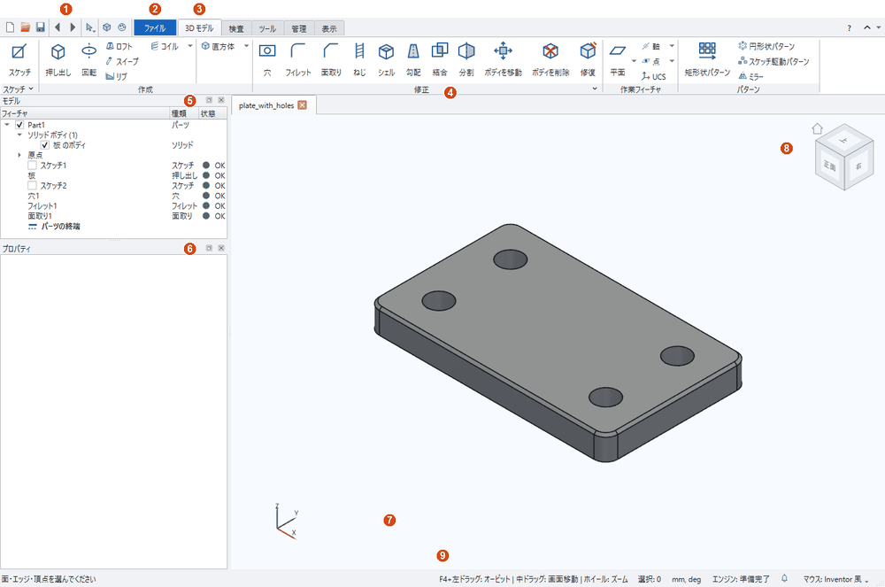
| 番号 | 名前 | 役割 |
|---|---|---|
| ① | クイック アクセス ツールバー | 新規・開く・保存・元に戻す・やり直しなど、よく使うコマンド |
| ② | ファイル | ドキュメントの操作のメニュー（アプリケーション メニュー） |
| ③④ | リボン（タブとパネル） | すべてのコマンドを置く場所。タブで切り替え、パネルにボタンが並びます |
| ⑤ | ブラウザ（［モデル］） | パーツの履歴（原点・スケッチ・フィーチャ・ボディ）の一覧 |
| ⑥ | プロパティ パネル | 選んだフィーチャの値、作成・編集のフォーム |
| ⑦ | ビュー | 3D の表示。クリックで要素を選び、マウスで視点を動かします |
| ⑧ | ViewCube | クリックで視点の向きを変えるキューブ |
| ⑨ | ステータスバー | 操作の案内、選択の数、単位、エンジンの状態、知らせ、マウスのプリセット |
ドキュメントは、ビューの上のタブで切り替えます（複数のドキュメントを同時に開けます）。まだ保存していない変更があるドキュメントは、タブの名前に * が付きます。
1.2 リボン
リボンは、上の段にタブ、その下にパネルが並びます。パネルの中にコマンドのボタンがあり、パネルの名前はパネルの下に出ます。構成は Autodesk Inventor 2025・2026 のリボンと同じです。

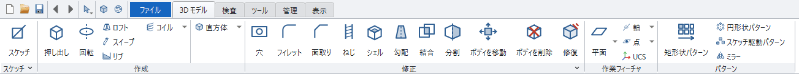
ボタンを押してツールを始めると、使っているツールのボタンが、色の付いた枠と薄い色で強調されます。パネルが畳まれていて、使っているツールがそのパネルの中のコマンドなら、畳まれたパネルのボタン全体が強調されます（注釈タブの［記号］パネルが畳まれた幅で［中心マーク］を始めたときなど）。ツールを終える（Esc・［OK］・［キャンセル］）か、別のツールを始めるか、モードやタブを替えると、強調は消えるか、そのタブのツールのボタンに移ります。ダイアログを開くだけのコマンドや、一度で終わるコマンドは強調されません。

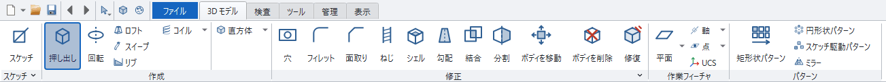
| タブ | パネル | 主なコマンド |
|---|---|---|
| ［3D モデル］ | ［スケッチ］・［作成］・［修正］・［作業フィーチャ］・［パターン］ | スケッチ、押し出し、回転、ロフト、スイープ、穴、フィレット、面取り、シェル、作業平面、矩形状パターン、ミラー |
| ［スケッチ］ | ［作成］・［修正］・［パターン］・［拘束］・［形式］・［終了］ | 線・円・長方形などの作図、トリム、寸法、拘束（スケッチを編集している間だけ出ます） |
| ［検査］ | ［計測］・［解析］ | 計測、領域のプロパティ、物理プロパティ、エラーを検索 |
| ［ツール］ | ［材料と外観］・［オプション］・［マクロ］ | 材料、外観、オプション、単位と精度、キーボード ショートカット、Python コンソール |
| ［管理］ | ［パラメータ］・［挿入］・［構成］ | パラメータ、iProperties、インポート、エクスポート、構成の表 |
| ［表示］ | ［表示設定］・［外観］・［ウィンドウ］・［ナビゲート］ | 表示・非表示、ビジュアル スタイル、断面図、ViewCube、標準ビュー、ズーム |
すべてのコマンドの場所・キー・説明は付録 Aにあります。ほかのタブは次の図のとおりです。

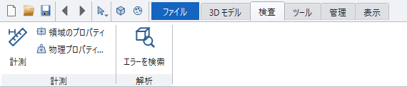

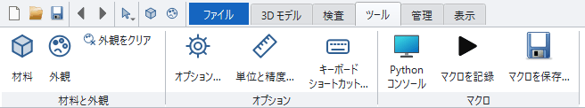

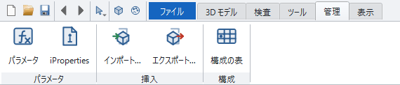

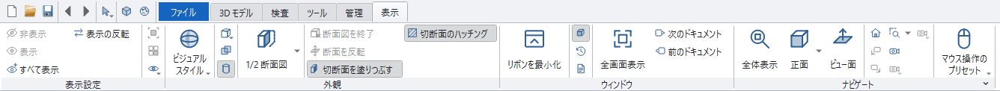
スケッチのタブ
スケッチを編集し始めると、リボンに緑色の［スケッチ］タブが出て、自動で前に出ます。スケッチを終えると消えて、［3D モデル］タブに戻ります。

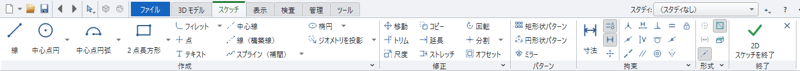
ボタンの種類
大きいボタンはアイコンの下に名前、小さいボタンはアイコンの横に名前が出ます。
ボタンの横の▼は、同じ仲間のコマンドをまとめたドロップダウンです。▼ を押すとメニューが開きます。最後に使ったコマンドがボタンの表に出て、次からは表のボタンを押すだけで使えます。
パネルの名前の横の▼は、そのパネルの残りのコマンドを開きます。
今は使えないコマンドは灰色で出ます。ボタンの上にマウスを置くと、名前・キー・説明のヒントが出ます。F1 を押すと、そのコマンドの詳しい説明が開きます。
ウィンドウが狭いと、右のパネルから小さいボタンの名前を省き、それでも狭いと右のパネルから畳みます。畳まれたパネルを押すと、そのパネルのコマンドがメニューで出ます。
リボンを小さくする
3D ビューを広く使いたいときは、リボンを最小化します。
［リボンを最小化］（Ctrl+F1）か、タブの名前のダブルクリックで、タブだけの表示と全体の表示を切り替えます。
タブだけの表示では、タブを押すとパネルが浮かんで出ます。
リボンの右端の最小化のボタンの▼では、［タブに最小化］・［パネル タイトルに最小化］・［パネル ボタンに最小化］・［すべてを切り替え］を選べます。最小化の状態は、アプリを閉じるときに保存され、次の起動で戻ります。
1.3 クイック アクセス ツールバーとファイル
画面の左上には、クイック アクセス ツールバーとアプリケーション メニュー（［ファイル］）があります。
クイック アクセス ツールバーには、［新規］・［開く］・［保存］・［元に戻す］・［やり直し］、選択フィルタのドロップダウン（［面を選択］・［エッジを選択］・［頂点を選択］・［選択を解除］）、［材料］、［外観］が並びます。
［ファイル］を押すと、ドキュメントの操作のメニューが開きます。

ドキュメントの保存や開き方は第 13 章にあります。
最近使ったドキュメント
［ファイル］の［最近使ったドキュメント］には、最近開いた・保存したドキュメントが新しい順に並びます（10 件まで）。選ぶと、そのドキュメントが開きます。

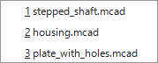

並ぶのは、ファイルの名前です（先頭に 1〜9 の番号が付きます）。カーソルを合わせると、ファイルの場所が出ます。
開いたとき・保存したとき（［名前を付けて保存］・［コピーを保存］を含む）に、先頭へ入ります。10 件を超えると、いちばん古いものから消えます。
ファイルが移動・削除されて無いものは、灰色で選べません。
一覧は設定に記録されるので、アプリを閉じても残ります。
1.4 ブラウザ
画面の左上のドックは［モデル］のブラウザです。パーツを作った順（履歴）に、フィーチャが並びます。

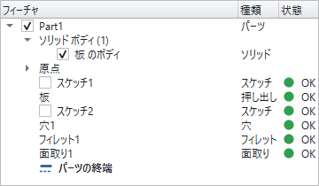
| 行 | 内容 |
|---|---|
| パーツ（［Part1］） | ドキュメントの部品。行の名前は、F2（名前の変更）で変えられます |
| ソリッド ボディ | パーツができたソリッドの一覧。チェックで表示・非表示を切り替えます |
| ［原点］ | 原点・［X 軸］・［Y 軸］・［Z 軸］・3 つの原点平面。チェックで 3D ビューに出し入れします |
| スケッチ・フィーチャ | 作った順に並びます。［種類］の列にフィーチャの種類、［状態］の列に結果（［OK］・［警告］・［エラー］など）が出ます |
| ［パーツの終端］ | ここより後ろは計算されません。上の行へドラッグして、途中までの形を確かめられます |
行をクリックすると、ビューで対応する要素が選ばれます。ビューで面を選ぶと、それを作ったフィーチャの行が強調されます。
行をダブルクリックすると、そのフィーチャ（スケッチ）の編集が始まります。
行を右クリックすると、［フィーチャの編集］・［削除］・［名前の変更］・［抑制］などのメニューが出ます。
状態が［OK］でないフィーチャは、印が付いて、ツールチップに理由が出ます。
ブラウザの操作の詳細（並べ替え・抑制・フォルダ・参照の修復）は第 9 章にあります。
1.5 プロパティ パネル
ブラウザの下は［プロパティ］パネルです。2 つの使い方があります。
フィーチャの値を見る
ブラウザでフィーチャを 1 つ選ぶと、そのフィーチャの名前・状態・パラメータの値が出ます。欄の値を変えて Enter で確定すると、その値だけが変わります。［編集］のボタンを押すと、フィーチャの編集が始まります（参照を選び直すときなど）。

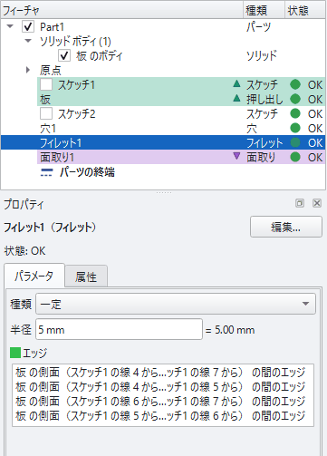
フィーチャを作る・編集する
押し出しやフィレットなどのコマンドを始めると、パネルにフォームが出ます。フォームは Inventor と同じ入力ジオメトリ → 動作 → 出力の並びです。確定は［OK］（Enter か Ctrl+Enter）、取り消しは［キャンセル］（Esc）です。フィーチャを新しく作るときは、［OK］と［キャンセル］の間に［+］（適用して新規作成）も出ます。確定して、同じ種類のフィーチャを同じ値で続けて作り始めます（選んだ面やエッジなどは空になります）。同じボタン（確認コーナー）は、ビューの右上にも出ます。
数値の欄には、数値のほかに式（10 mm + 2・W / 2）や単位（1 inch）も書けます。右に評価した値（= 12.00 mm）が出て、間違いは赤い枠とヒントで知らせます。単位のない数値は、ドキュメントの単位として扱います。
1.6 ビューと ViewCube
画面の中央が 3D ビューです。マウスの左クリックで要素（面・エッジ・頂点）を選び、右クリックでコンテキスト メニューを開きます。視点の動かし方は第 2 章にあります。
面・エッジにカーソルを合わせると橙色に光り、クリックすると選ばれて青色になります。Ctrl を押しながらクリックで選択を切り替え、Shift を押しながらで追加します。何もない所をクリックすると選択を解除します。
右クリックすると、カーソルの下の面・エッジ・作業平面が選ばれてから、その要素のメニューが出ます（平らな面・作業平面のメニューには［新しいスケッチ］があります）。何も選んでいなくてもかまいません。すでに選んでいる要素を右クリックしたときは、選択は変わりません（複数を選んでいても、そのままです）。何もない所を右クリックすると、今の選択のメニューが出ます。
スケッチの中と、フィーチャのツールを使っている間は、右クリックで選択は変わりません。選ばれる種類は、クイック アクセス ツールバーの選択フィルタに従います（［面を選択］を切ってあると、面は選ばれません）。
左下の小さな座標軸は、今のビューの X・Y・Z の向きです。
右上のViewCubeは、クリックした面・エッジ・コーナーの向きから見るためのキューブです。左上の家のボタンで［ホーム ビュー］に戻ります。

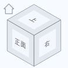
1.7 数値の入力（HUD）
押し出し・回転・穴・フィレット・面取りなどの作成・編集の間、ビューにはライブプレビュー（OK の前に結果を半透明で見せる表示）と、値を変えるハンドル（青い矢印）が出ます。ハンドルの横には値の欄が出ます。これを HUD と呼びます。

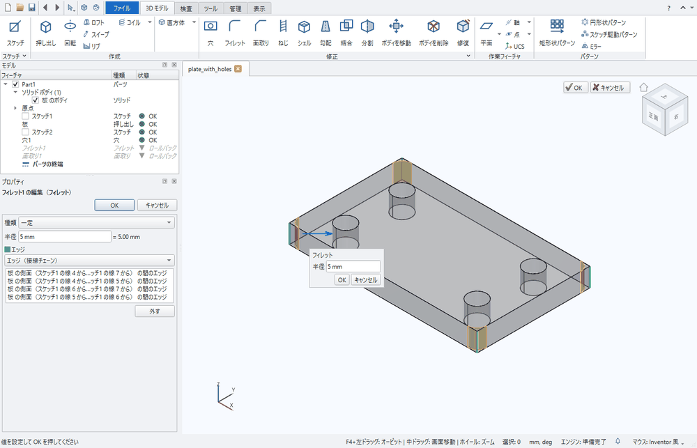
ビューで数字を打つと、HUD の最初の欄に入ります。
Tab で次の欄へ進みます（Shift+Tab で前の欄）。
Enter で確定（［OK］と同じ）、Esc でキャンセルします。
欄には式（${W}/2・10 mm + 2）も書けます。矢印の先をドラッグしても値を変えられます。ドラッグの値は、画面の大きさに合わせた 1・2・5 の刻みに丸まります（Shift を押している間は丸めません）。スケッチの作図中にも、線の長さ・角度、円の直径などを同じ方法で入力できます（第 4 章）。
HUD は、出る場所で 2 種類に分かれます。どちらも［OK］と［キャンセル］のボタンが付いていて、マウスでも押せます。
決まった位置に出る HUD: ハンドルの横・寸法を置いた位置・断面の矢印の横に出ます。
スケッチの入力ウィンドウ: スケッチの作図・編集ツール（線・円・フィレット・面取り・オフセットなど）の値の欄です。カーソルには付かず、ビューの左上に止まっています。見出し（上の帯）をマウスでドラッグすると、好きな場所へ動かせます（第 4 章）。
どちらの HUD も、マウスを使わずキーだけでも操作できます。Tab は、数値の欄だけでなく、選択肢（［種類］など）とチェック（［コピー］・［等しい］など）にも移ります（Shift+Tab で前の欄）。フォーカスのある欄には、青い枠が付きます。
| 欄 | キー |
|---|---|
| 数値の欄 | 数字・単位・式を打ちます。ビューで最初に打った数字は、最初の欄に入ります |
| 選択肢 | ↑・↓ で選びます（一覧は開きません） |
| チェック | Space で切り替えます |
| どの欄でも | Tab・Shift+Tab で次・前の欄、Enter で確定、Esc でキャンセル |
数値の欄がない HUD（移動の［コピー］やスプラインの［閉じる］のチェックだけのもの）も、ビューで Tab を押すと、最初の欄にフォーカスが移ります。ビューのクリックに戻れば、そのまま作図を続けられます。ブラウザやプロパティの欄を触ったあとでも、スケッチの入力ウィンドウが出ると、キーボードのフォーカスはビューに移ります。Tab も数字も、そのまま入力ウィンドウに届きます（別の欄に文字を打っている途中のときは、移しません）。
1.8 ミニツールバー
ビューで面・エッジ・ボディなどを選ぶと、選んだ場所の近くに小さなツールバーが浮かんで出ます。右クリックのメニューと同じ、よく使うコマンド（［非表示］・［分離］・［ビュー面］・［選択範囲をズーム］・［全体表示］・［選択を解除］など）をすぐ押せます。

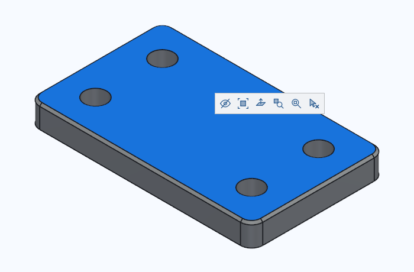
ツールが動いている間、Esc を押したとき、視点を動かしている間は隠れます。出さない設定もあります（第 27 章）。
1.9 ステータスバー
画面の下のステータスバーには、左から次のものが出ます。

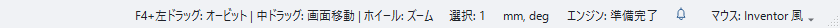
| 場所 | 内容 |
|---|---|
| 左 | 今のツールの案内（次に何をするか。タブを替えると、そのタブのツールの案内になります）や、カーソルの下にある要素の名前（［押し出し1 の終了面］ など）。案内が長くて切れるときは、文にカーソルを置くと全文が出ます |
| 中央 | マウス操作のヒント（F4+左ドラッグ: オービット | 中ドラッグ: 画面移動 | ホイール: ズーム）。回転しない図面のタブでは、中ドラッグ: 画面移動 | ホイール: ズームです |
| 右 | 選択の数と簡易測定（面なら面積、エッジなら長さ）。図面のタブでは、選んだビュー・注記・スケッチの数です |
| 右 | 単位（mm, deg）。押すと［単位と精度］のダイアログが開きます |
| 右 | 計算エンジンの状態（エンジン: 準備完了・計算中） |
| 右 | 知らせ（ベルのボタン）。押すと知らせの履歴が開きます |
| 右端 | マウスのプリセット（マウス: Inventor 風）。押すと一覧が出て、ホバーで操作の早見表が出ます |
スケッチを編集している間は、カーソルのスケッチ座標と、スケッチの自由度・状態（未定義・完全定義・過剰定義）も出ます。
1.10 コマンド検索
コマンドの場所を忘れたときは、コマンド検索で名前から探して実行できます。
Ctrl+Shift+P を押します。［コマンド検索］は、リボンの右端の［ヘルプ］のメニューにもあります。
名前（日本語でも英語でも）を入力します。コマンドの名前・別名・説明・場所が検索の対象です。
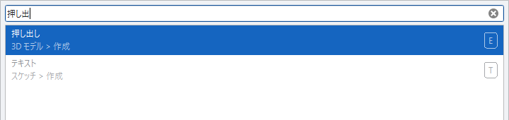
図 1-18 コマンド検索。結果の各行に、名前・リボンの場所・キーが出ます。 ↑↓ で選んで Enter（行のクリックでも）で実行します。Esc で閉じます。

今は使えないコマンドは灰色で出て、実行すると「今は使えません」と知らせます。最近実行したコマンドは上に出ます。
1.11 知らせと知らせの履歴
保存・書き出し・エラーなどの知らせは、ウィンドウの右下にしばらく出ます（トースト）。エラーのトーストには、失敗したフィーチャを直す［編集］のボタンが付きます。

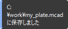
消えた知らせは、履歴で読み返せます。
ステータスバーのベルのボタンを押すか、リボンの右端の［ヘルプ］のメニューから［通知］を選びます。
［通知］のタブで、時刻・重大度（［情報］・［警告］・［エラー］）・メッセージを見ます。検索欄で絞り込み、［コピー］・［保存］のボタンで書き出せます。
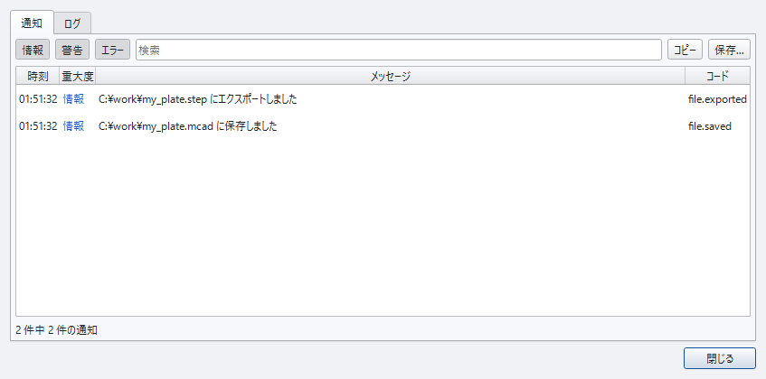
図 1-20 知らせの履歴。［ログ］のタブでは、アプリのログも読めます。

知らせの履歴とログは、［ログと通知］（リボンの［表示］タブの［ウィンドウ］パネル）でドックとしても開けます。